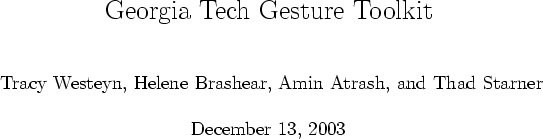

Next:
Contents
Contents
Index

Contents
Toolkit Overview
Introduction
User Provided Components
GT
k
Tools
Quick Start Guide
Overview
Preparation
Training
Validation and System Performance
Recognition Application
Using
GT
k
Data Preparation
Designing Gesture Models
HMM Generation Tool
HMM Visualization Tool
Specifying a Grammar
Data Collection and Annotation
Training and Recognition
Training
Bibliography
Index
About this document ...
Debian User 2003-12-13